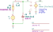

Schematic diagram of A1_R_noise_without_Rt.kicad_sch

Figure: A1_R_noise_without_Rt.svg Circuit diagram of A1_R_noise_without_Rt.
Netlist: A1_R_noise_without_Rt.cir
"A1_R_noise_without_Rt"
.source V1
.detector V_out
C2 in 0 C value={C_s} vinit=0
E1 out 0 in 0 E value={1/s/tau_i}
L1 1 in L value={L_s} iinit=0
R1 1 2 R value={R_s} noisetemp={T} noiseflow=0 dcvar=0 dcvarlot=0
V1 2 0 V value=0 noise=0 dc=0 dcvar=0
.end
Expanded netlist of A1_R_noise_without_Rt.cir.
RefDes
Nodes
Refs
Model
Param
Symbolic
Numeric
C2
in 0
C
value
$C_{s}$
$C_{s}$
vinit
$0$
$0$
E1
out 0 in 0
E
value
$\frac{1}{s \tau_{i}}$
$\frac{1}{s \tau_{i}}$
L1
1 in
L
value
$L_{s}$
$L_{s}$
iinit
$0$
$0$
R1
1 2
R
value
$R_{s}$
$R_{s}$
noisetemp
$T$
$300.0$
noiseflow
$0$
$0$
dcvar
$0$
$0$
dcvarlot
$0$
$0$
V1
2 0
V
value
$0$
$0$
noise
$0$
$0$
dc
$0$
$0$
dcvar
$0$
$0$
Parameter definitions of A1_R_noise_without_Rt.cir.
Name
Symbolic
Numeric
$T$
$300$
$300.0$
Table: Parameters without definition in 'A1_R_noise_without_Rt.
Name
$R_{s}$
$\tau_{i}$
$L_{s}$
$C_{s}$
The noise budget is calculated by the following formula:
design specification
Table design specification
symbol
description
value
units
$C_{i}$
Integrator capacitance
$8.965 \cdot 10^{-10}$
$\mathrm{F}$
performance specification
Table performance specification
symbol
description
value
units
$C_{s}$
Source capacitance
$9.382 \cdot 10^{-12}$
$\mathrm{F}$
$L_{s}$
Source inductance
$0.12$
$\mathrm{H}$
$P_{max}$
Maximum power dissipation at maximum supply voltage